Case study · Customer insights & omnichannel marketing
Mangetsu
Customer Insights & Omnichannel Marketing Strategy
Team projectHow a manga publisher can support a series volume after volume through social media, digital marketing and operational marketing, organised along the reader's journey.
Prototype of the app concept (team deliverable, not a released product).
Team workAcademic project delivered by a team of five students (Bachelor in Marketing, EPHEC). Research, recommendations, prototypes and budget were shared work; individual parts were not tracked, so nothing on this page is presented as my personal achievement. The recommendations were not implemented by the publisher.
Customer journeyAudience researchCommunity strategyDigital marketingContent strategyProduct & service conceptsOmnichannel
01 · Context
A series is not sold once. It has to be supported at every new volume.
Mangetsu is a French manga publisher whose series are released volume by volume. Each release has to be noticed, wanted, bought and followed, often months after the previous one. The team looked at how a publisher can keep that momentum with social media, digital tools and operational marketing.
The work combined a quantitative survey of manga readers, a benchmark of other publishers and box subscriptions, and price research on goodies, then turned the findings into concrete concepts.
02 · Challenge
Keep readers engaged between two volumes, and bring them back for the next one.
How do publishers support their series from one volume to the next through social media, digital marketing and operational marketing?
The answer had to work at each step: get noticed, create desire, trigger the purchase, then build loyalty and word of mouth.
03 · My role
Team project, presented as such.
Five students carried the project together: the survey, the benchmark, the nine recommendations, the prototypes, the budget and the defence. Individual responsibilities were not documented, so this page credits the team rather than assigning parts to me.
What the team produced
- A quantitative survey of manga readers with charts supporting each recommendation
- A benchmark of publishers, box subscriptions and goodies pricing
- Nine recommendations placed on a four-stage customer journey
- Visual prototypes: Discord server, website, manga box, QR code, mobile app
- A budget and a methodological critique
What this project shows
- Customer journey thinking
- Audience research used to justify choices
- Community and content strategy
- Product and service concepts across channels
- Working and presenting as a team
04 · Approach & methodology
One journey, four stages, and a recommendation for each moment.
- 01AwarenessGet the series noticed
- 02Interest / DesireCreate a community and anticipation
- 03ActionMake the purchase easy and attractive
- 04Loyalty / RecommendationBring readers back and let them spread the word
Evidence
- Reader survey
- Benchmark
- Price research
- Prototypes
05 · Insights
What guided the recommendations.
Findings from the team's survey and desk research, as used in the project. They are audience insights, not results of an executed campaign.
TikTok and Instagram ranked among the networks most used by respondents.
Which is why the awareness and interest stages rely on short video and highlighted stories rather than on new platforms.
Subtitles are not optional on TikTok.
Many people watch without sound and, as noted in the project, 6.6% of the French population is hearing-impaired. Automatic captions misread manga titles, so captions should be checked by hand.
Mangetsu had no Discord server yet.
A gap compared with the way reader communities already gather, and an opportunity to bring followers from every network into one place.
Figurines, posters, bookmarks and plush toys were the goodies respondents wanted most.
Price research on each item fed the manga box concept and its budget.
The printed volume is the best place to start a digital relationship.
Respondents rated the idea of a QR code, an app and a subscription; the scores are shown on the survey slides below.
Gift boxes are a large market that no manga publisher owned.
The project cites a European gift-box market of about €1 billion and benchmarks existing manga boxes (Manga Box, Nihon Box, Meian).
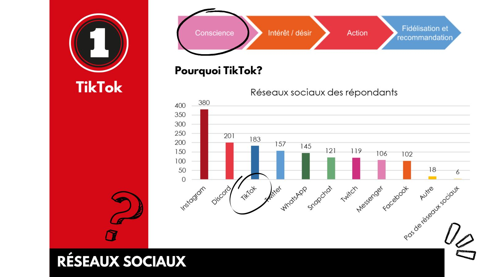
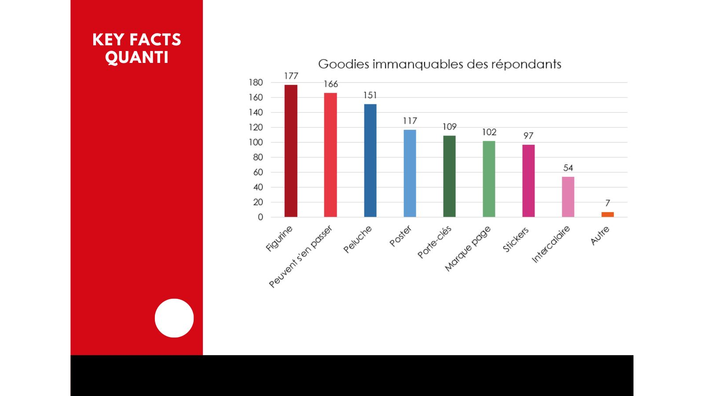
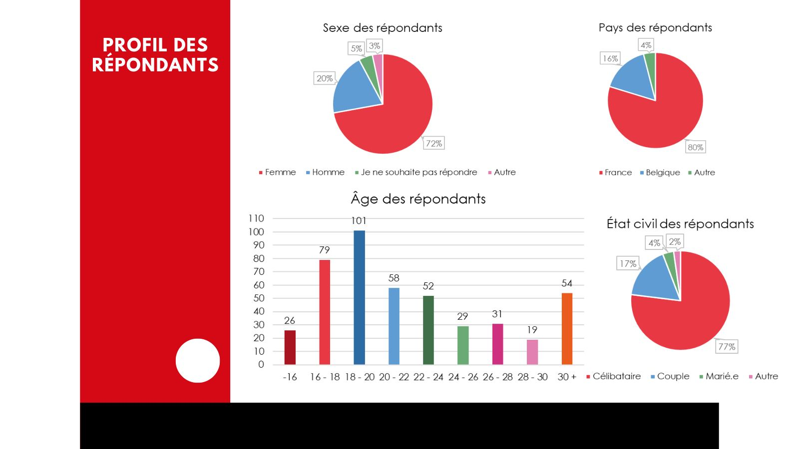
06 · Strategy
Nine recommendations along the reader's journey.
Social media, digital marketing and operational marketing, each used where it does the most for the reader.
AwarenessGet noticedSocial media
- 1TikTok
Short videos with checked subtitles and author anecdotes, linked to the other networks.
Interest / DesireBuild the communitySocial media
- 2Discord
One channel per series, release announcements, self-assigned roles, spoiler rules, moderation bots and a backup.
- 3Instagram highlights
One highlight per ongoing series so followers find announcements fast.
- 4Video capsules
Reviews of each series and a short trailer for every new volume, on TikTok, YouTube and Instagram.
ActionTrigger the purchaseOperational & digital
- 5Manga Box
A themed box sold in bookshops with three volumes of a series and goodies: discover a series and want the next one.
- 6Website optimisation
Catalogue sorted by collection then series, a search bar, author summaries and links to TikTok and Twitch.
Loyalty / RecommendationBring readers backOperational & digital
- 7Subscription
Receive volumes at each release, choose how many and from which volume to start.
- 8QR code
On the back of the manga: a call to action to the app, the newsletter, Discord, pre-orders or a preview chapter.
- 9Mangetsu app
Track owned volumes, per-series release notifications, author anecdotes, links to newsletter and Discord.
07 · Deliverables
Concepts you can look at, not just read about.
Prototypes and visuals from the team presentation. Click an image to see it full size.
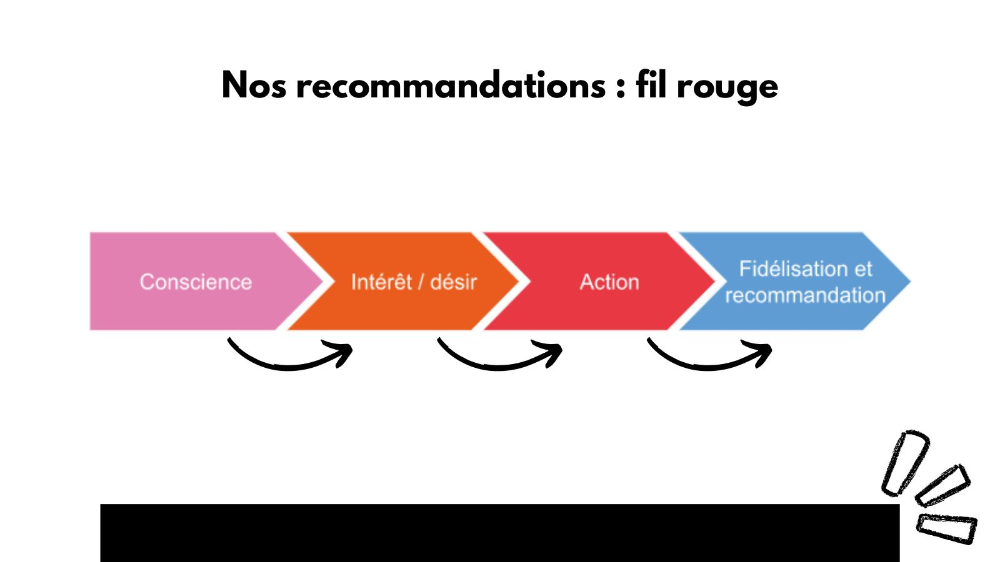
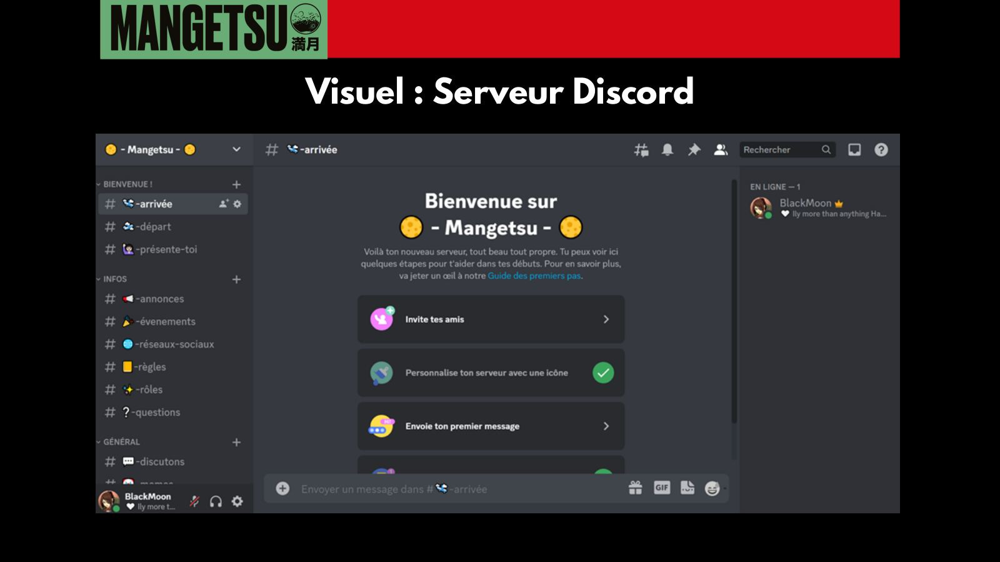
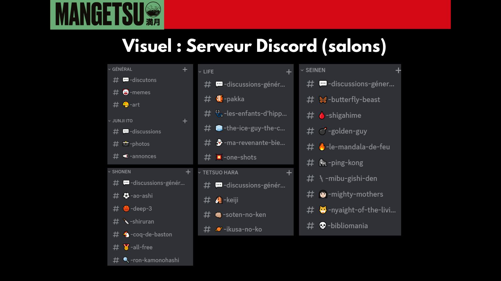
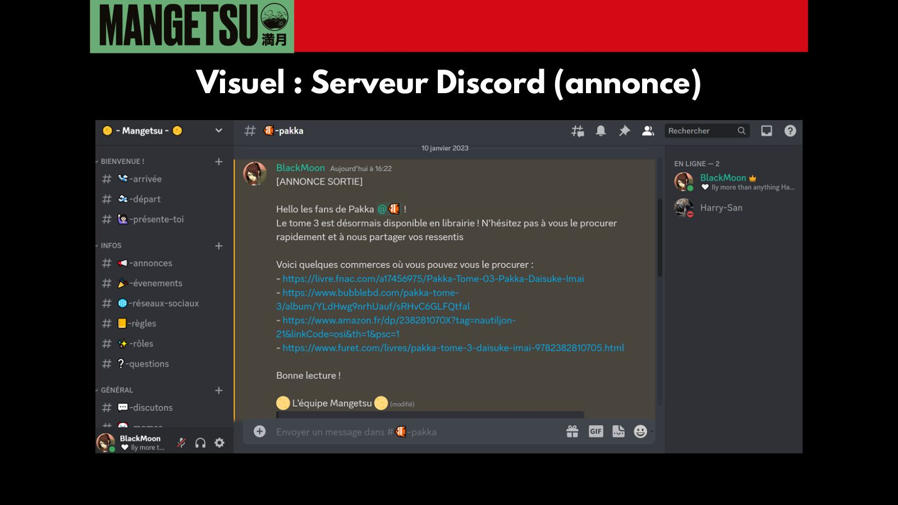
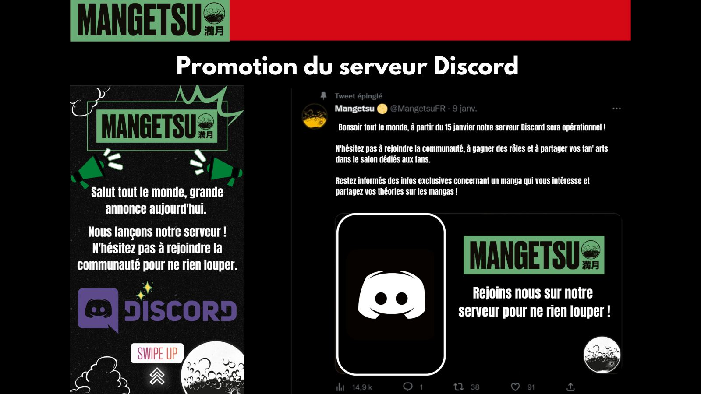
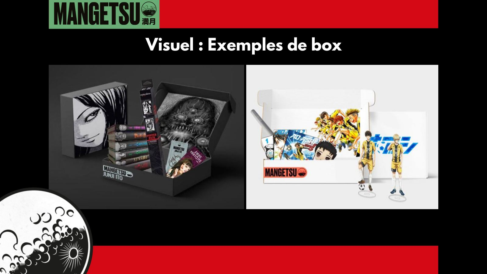
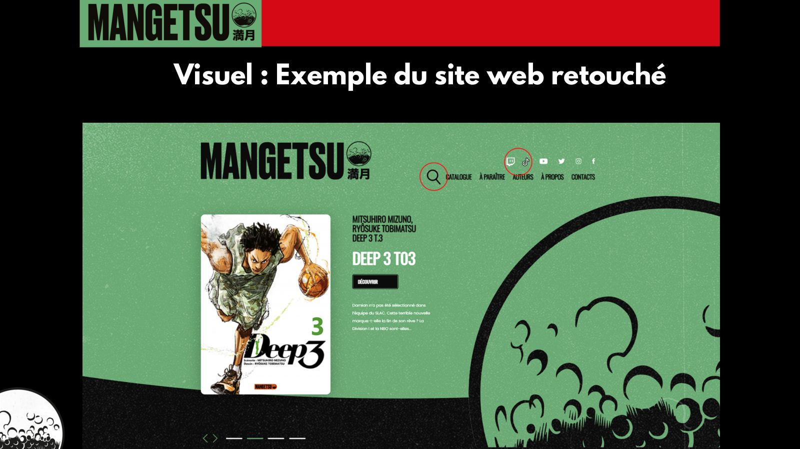
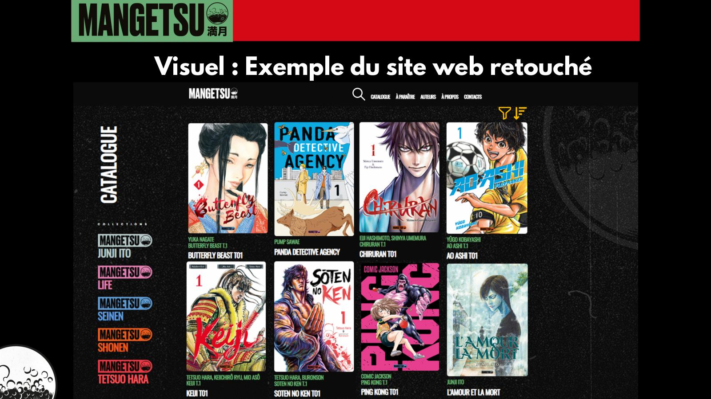
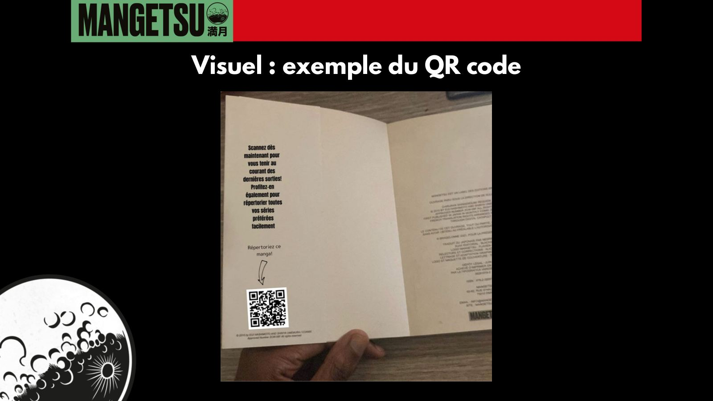

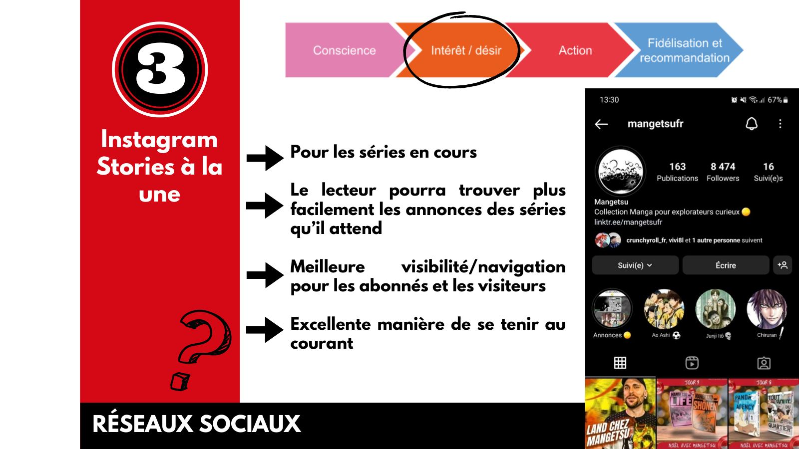
08 · Skills
What this project exercised.
Organising every action along awareness, interest, action and loyalty, with one goal per stage.
→ JourneyA reader survey whose charts justify each channel and concept, plus a benchmark of publishers and boxes.
→ InsightsA Discord server designed down to channels, roles, moderation and how to attract members.
→ Discord prototypesTikTok videos, Instagram highlights and video capsules, each with a role at a precise moment.
→ StrategyManga box, subscription, QR code and app: concepts prototyped so they can be judged and costed.
→ PrototypesShared research, shared recommendations and a joint defence in a team of five.
→ My role09 · Key learnings
“Each channel has a job at a specific moment of the reader's journey. The strategy is the sequence, not the list of tools.”
- Connect the physical and the digitalThe QR code on the printed volume is the smallest idea in the project and the one that links everything else.
- Prototype to be understoodA Discord server or an app is much easier to judge as a mock-up than as a paragraph.
- Credit the teamPresenting shared work honestly matters as much as the ideas themselves.
10 · Next project
Entrepreneurial project · Brand, content & social media
Akira Fashion
Stories, posts and promotional visuals for a real clothing brand.
View case study→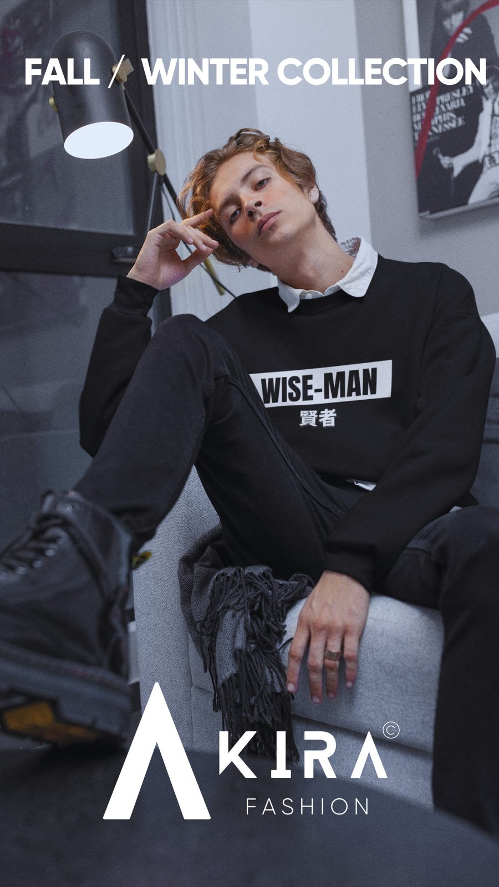